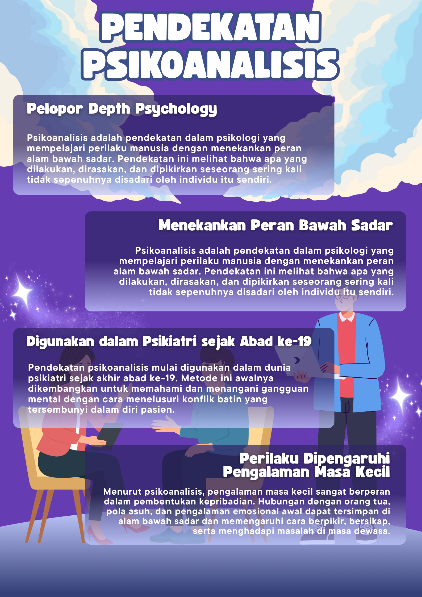
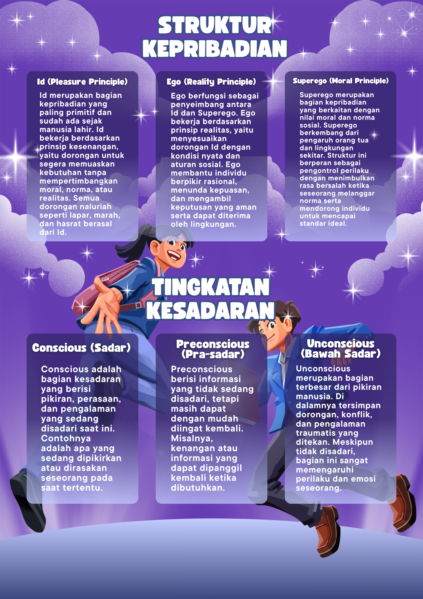
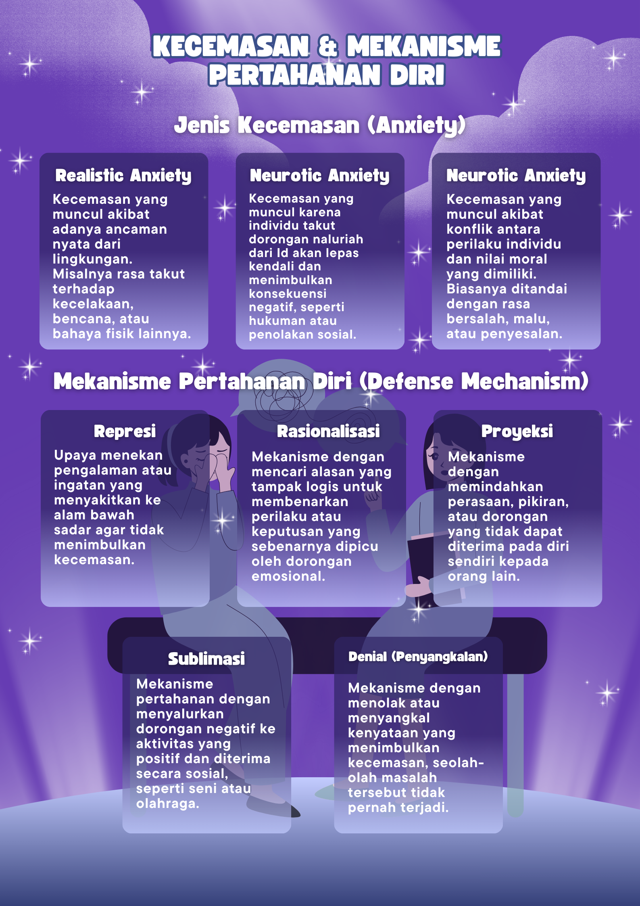

Vanya Fitria Ramadhani
Front End Developer
Front End Developer
Halo, saya Vanya Fitria Ramadhani, Saya memiliki ketertarikan pada bidang teknologi, computer engineering, dan desain digital. Saya memiliki pengalaman dalam troubleshooting komputer, instalasi dan maintenance sistem operasi Windows, networking dasar, serta dukungan teknis perangkat komputer. Selain itu, saya juga tertarik pada pengembangan website dan desain antarmuka dengan konsep clean, modern, dan user-friendly. Saya senang mempelajari teknologi baru, mengembangkan kemampuan di bidang IT, serta terlibat dalam berbagai project digital untuk meningkatkan keterampilan teknis maupun kreativitas. Dengan kemampuan problem solving, adaptasi teknologi, dan ketelitian dalam bekerja, saya terus berusaha mengembangkan diri menjadi pribadi yang profesional dan kompeten di bidang teknologi serta digital development.
Kumpulan desain poster dengan berbagai rasio aspek (3:4 & 9:16) yang dibuat untuk kebutuhan promosi, media digital, dan berbagai project desain visual.


.png)

Project desain infografis dengan tampilan visual yang informatif dan mudah dipahami.





Dokumentasi kegiatan maintenance perangkat dan proses troubleshooting komputer.


Terbuka untuk peluang project digital, desain, dan pengembangan di bidang teknologi.